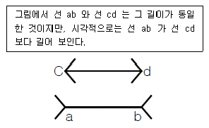
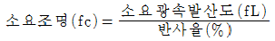
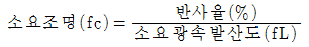
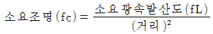
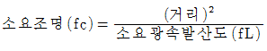
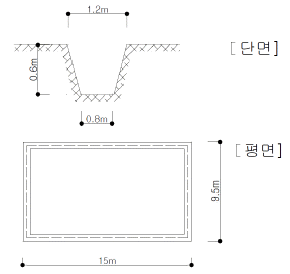
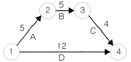
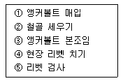

건설안전산업기사 (2007-05-13 기출문제)
1과목: 산업안전관리론
1. 다음의 의식 레벨 단계 중 신뢰도 가장 높은 단계는?
- phase IV
- phase III
- phase II
- phase I
(정답률: 55%)

2. 근로자 400명이 1일 9시간씩 연간 300일을 작업하는데 1명의 사망자와 휴업일수 200일의 손실을 가져 왔다. 이 작업장의 강도율은 약 얼마인가?
- 6.67
- 7.10
- 7.98
- 8.52
(정답률: 43%)
3. 비통제의 집단행동 중 폭동과 같은 것을 말하며, 군중(Crowd)보다 합의성이 없고, 감정에 의해서만 행동하는 특성을 무엇이라 하는가?
- 모브(Mob)
- 패닉(Panic)
- 모방(Imitation)
- 심리적 전염(Mental Epidemic)
(정답률: 34%)
4. 다음 중 토의법의 장점으로 볼 수 없는 것은?
- 사고, 표현력을 향상시켜 준다.
- 민주적 태도의 가치관을 육성할 수 있다.
- 타인의 의견을 존중하는 태도를 기를 수 있다.
- 전체적인 교육내용을 제시하는데 유리하다.
(정답률: 79%)
5. 정신, 신경기능 중심의 피로도를 측정하는 방법으로 거리가 먼 것은?
- 지각역치
- 반응시간
- 에너지대사율
- 안구운동
(정답률: 42%)
6. B 기업체에서 1,000명의 작업자가 1주에 40시간, 연간 50주를 작업하는데 80건의 재해가 발생하였다. 이 가운데 작업자들이 질병 등 그 밖에 이유로 인하여 총 근로시간의 5% 를 결근하였다면 이 기업체의 도수율은 약 얼마인가?
- 35.⑤
- 42.11
- 57.21
- 68.35
(정답률: 69%)
7. 다음 중 불안전한 행동과 가장 관계가 작은 것은?
- 물건을 급히 운반하려다 부딪쳤다.
- 뛰어가다 넘어져 골절상을 입었다.
- 높은 장소에서 작업 중 부주의로 떨어졌다.
- 정지해 있는 호이스트의 고리에 머리를 다쳤다.
(정답률: 62%)
8. 안전모 중에서 머리 부위의 감전에 의한 위험을 방지할 수 있는 것은?
- A 형
- B 형
- AC 형
- AE 형
(정답률: 70%)
9. 안전보건교육의 기본적인 지도 원리에 해당되지 않는 것은?
- 동기부여
- 반복교육
- 5관의 활용
- 어려운 부분에서 쉬운 부분으로
(정답률: 71%)
10. 안전보건개선계획서에 포함되어야 할 사항이 아닌 것은?
- 안전⋅보건교육
- 안전보건관리예산
- 안전⋅보건관리체제
- 산업재해예방 및 작업환경의 개선을 위하여 필요한 사항
(정답률: 36%)
11. 일반 보안면의 투시부의 가시광선 투과성은 투명한 투시부일 경우 입사광선의 85% 이상을 투과하여야 하며 채색 투시부의 경우 차광도에 따라 투과율이 결정되는데 차광도가 “밝음”일 때 투과율은 몇 %T 인가?
- 50±7
- 30±7
- 23±4
- 14±4
(정답률: 46%)
12. 다음 중 산업안전보건법에서 정하는 산업안전보건표지의 종류에 해당되지 않는 것은?
- 안내표지
- 경고표지
- 지시표지
- 보호표지
(정답률: 67%)
13. 학습동기를 유발시키는 방법 중에서 촉진 효과가 가장 큰 것은?
- 통제
- 질책
- 무시
- 칭찬
(정답률: 60%)
14. “사고에는 반드시 원인이 있다.” 라는 원칙은 산업재해예방의 4원칙 중 무엇에 해당하는가?
- 대책 선정의 원칙
- 원인 연계의 원칙
- 손실 우연의 원칙
- 예방 가능의 원칙
(정답률: 80%)
15. 안전교육 중 ATP(Administration Training Program)라고도 하며, 당초에는 일부 회사의 최고 관리자에 대해서만 행하여졌던 것이 널리 보급된 것은?
- TWI(Training Within Industry)
- MTP(Management Training Program)
- CCS(Civil Communication Section)
- ATT(American Telephone & Telegram Co)
(정답률: 50%)
16. 공정안전보고서의 세부내용 중 안전운전계획에 포함 하여야 하는 것이 아닌 것은?
- 안전운전지침서
- 안전작업허가
- 설비배치도
- 도급업체 안전관리계획
(정답률: 42%)
17. 다음의 설명과 그림은 어떤 착시 현상과 관계가 깊은가?

- 헬몰쯔(Helmholz)의 착시
- 퀄러(Köler)의 착시
- 뮬러-라이어(Mullyer-Lyer)의 착시
- 포겐 도르프(Poggendorf)의 착시
(정답률: 65%)
18. 다음 중 TWI의 교육과정과 연관성이 없는 것은?
- 작업지도 훈련
- 인간관계 훈련
- 정책수립 훈련
- 작업방법 훈련
(정답률: 78%)
19. 다음 중 사고예방대책의 기본 원리 5단계 중 2단계에 해당하는 것은?
- 기술적 개선
- 안전 점검
- 경영층의 참여
- 안전관리자 임명
(정답률: 50%)
20. 1000명 이상의 대규모 기업에서 일반적으로 많이 채택되고 있는 안전조직의 방식은?
- 라인 방식
- 스탭 방식
- 라인-스탭 방식
- 인간-기계 방식
(정답률: 85%)
2과목: 인간공학 및 시스템안전공학
21. 시스템이나 서브시스템 위험분석을 위하여 일반적으로 사용되는 전형적인 정성적, 귀납적 분석기법으로 시스템에 영향을 미치는 모든 요소의 고장을 형태별로 분석하여 그 영향을 검토하는 분석기법은?
- PHA
- FMEA
- SSHA
- ETA
(정답률: 40%)
22. 다음 중 주어진 작업에 대하여 필요한 소요조명(fc)을 구하는 식으로 옳은 것은?




(정답률: 18%)
23. 시야는 색상에 따라 그 범위가 달라지는데 다음 중 시야의 범위가 가장 넓은 색상은?
- 백색
- 청색
- 적색
- 녹색
(정답률: 52%)
24. 고열 작업환경 하에서 심한 근육 작업 후에 근육의 수축이 격렬하게 일어나며, 체내 염분농도 부족에 의해 야기되는 장해는?
- 열경련
- 열사병
- 열쇠약
- 열허탈증
(정답률: 63%)
25. 일정한 범위에서 수치가 자주 또는 계속 변하는 경우 가장 유용한 표시장치는?
- 디지털 표시장치
- 카운터 표시장치
- 고정눈금 이동지침 표시장치
- 이동눈금 고정지침 표시장치
(정답률: 38%)
26. 평균고장 시간(MTTF)이 6×105시간인 요소 3개가 직렬계를 이루었을 때의(system)의 수명은?
- 2×105시간
- 3×105시간
- 9×105시간
- 18×105시간
(정답률: 39%)
27. 다음 중 기계가 갖고 있는 한계점으로 옳지 않은 것은?
- 기계는 융통적이지 못하다.
- 기계는 임기응변을 하지 못한다.
- 기계는 물리적인 힘을 지속적으로 적용하지 못한다.
- 기계는 예기치 못한 사건들을 감지할 수 없다.
(정답률: 53%)
28. 병렬계 시스템의 특성에 대한 설명으로 틀린 것은?
- 요소의 중복도가 증가할수록 계의 수명은 짧아진다.
- 요소의 수가 많을수록 고장의 기회는 줄어든다.
- 요소의 어느 하나가 정상적이면 계는 정상이다.
- 시스템의 수명은 요소 중 수명이 가장 긴 것으로 정할 수 있다.
(정답률: 53%)
29. 시스템안전분석에 대한 설명 중 틀린 것은?
- 해석의 수리적 방법에 따라 정성적, 정량적 해석 방법이 있다.
- 해석의 논리적 견지에 따라 귀납적, 연역적 해석 방법이 있다.
- FTA는 연역적, 정량적 분석이 가능한 방법이다.
- 예비사고분석(PHA)은 운용사고 해석이라고 말할 수 있다.
(정답률: 42%)
30. 작업원 2인이 중복하여 작업하는 공정에서 작업자의 신뢰도는 0.85 로 동일하며, 작업 간의 50% 만 중복 작업을 지원한다면 이 공정의 인간신뢰도는 얼마인가?
- 0.6694
- 0.7225
- 0.9138
- 0.9888
(정답률: 25%)
31. 음압수준이 10dB 증가하면 음압은 몇 배가 되겠는가?
- √5
- √10
- 5
- 10
(정답률: 55%)
32. 주로 통신에서 잡음 중의 일부를 제거하기 위해 여과기(filter)를 사용하였다면 이는 다음 중 어느 것의 성능을 향상시키는 것인가?
- 신호의 산란성
- 신호의 양립성
- 신호의 검출성
- 신호의 표준성
(정답률: 69%)
33. 1 sone 은 몇 phon 인가?
- 1
- 10
- 20
- 40
(정답률: 38%)
34. 인간의 기대하는 바와 자극 또는 반응들이 일치하는 관계를 무엇이라 하는가?
- 관련성
- 반응성
- 자극성
- 양립성
(정답률: 66%)
35. 다음 중 택시요금 계기와 같이 숫자로 표시되는 정량적인 동적 표시장치를 무엇이라 하는가?
- 계수형
- 동목형
- 동침형
- 수평형
(정답률: 54%)
36. 성공수(success tree)의 정상사상을 발생시키는 기본 사상들의 최소집합을 시스템 신뢰도 측면에서는 무엇이라고 하는가?
- cut set
- true set
- path set
- module set
(정답률: 56%)
37. 색(色)의 3속성 중 하나인 명도(Value, Lightness)가 갖는 심리적 과정에 대한 설명으로 틀린 것은?
- 명도가 높을수록 작게 보이고, 명도가 낮을수록 크게 보인다.
- 명도가 높을수록 가깝게 보이고, 명도가 낮을수록 멀리 보인다.
- 명도가 높을수록 가볍게 느껴지고, 명도가 낮을수록 무겁게 느껴진다.
- 명도가 높을수록 빠르고 경쾌하게 느껴지고, 명도가 낮을수록 둔하고 느리게 느껴진다.
(정답률: 47%)
38. 옥외의 자연조명에서 최적 명시거리일 때 문자나 숫자의 높이에 대한 획폭비는 일반적으로 검은 바탕에 흰 숫자를 쓸 때는 (A), 흰 바탕에 검은 숫자를 쓸 때는 (B)가 독해성이 최적이 된다고 한다. 다음 중 (A), (B)의 획폭비로 가장 적절한 것은?
- (A) 1 : 5.3, (B) 1 : 10
- (A) 1 : 3.1, (B) 1 : 12
- (A) 1 : 11.1, (B) 1 : 4
- (A) 1 : 13.3, (B) 1 : 8
(정답률: 21%)
39. 산업안전표지 중 유독물 경고는 해골과 뼈로 나타내고 있다. 이처럼 사물이나 행동을 단순하고 정확하게 나타낸 부호를 무엇이라 하는가?
- 묘사적 부호
- 추상적 부호
- 사실적 부호
- 임의적 부호
(정답률: 40%)
40. 인간과 주위와의 열교환과정을 나타낼 수 있는 열균형 방정식으로 가장 적절한 것은?
- 열축적 = 대사 + 증발 ± 복사 ± 대류 + 일
- 열축적 = 대사 - 증발 ± 복사 ± 대류 - 일
- 열축적 = 대사 ± 증발 - 복사 - 대류 ± 일
- 열축적 = 대사 - 증발 - 복사 + 대류 + 일
(정답률: 32%)
3과목: 건설시공학
41. 기존 건물에 근접하여 구조물을 축조하거나 기존 건물의 파일 머리보다 깊은 건물을 건설할 때, 지하수면의 이동이 일어나거나 기존 건물 기초의 침하나 이동이 예상될 때 지하에 실시하는 보강공법은?
- 리버스 서큘레이션 공법
- 프리보링 공법
- 베노토 공법
- 언더피닝 공법
(정답률: 69%)
42. 수밀 콘크리트 공사에 관한 설명으로 옳지 않은 것은?
- 배합은 콘크리트의 소요의 품질이 얻어지는 범위 내에서 단위수량 및 물시멘트비는 되도록 적게 하고, 단위 굵은골재량을 되도록 크게 한다.
- 소요 슬럼프는 18cm 이상으로 한다.
- 연속 타설 시간간격은 외기온이 25℃ 미만일 때는 90분 이내로 한다.
- 거푸집의 조립에 사용하는 긴결철물은 콘크리트 경화 후 그 부분에서 누수가 안 되는 것을 사용한다.
(정답률: 52%)
43. 벽식 철근콘크리트 구조를 시공할 경우 벽과 바닥의 콘크리트 타설을 한 번에 가능하게 하기 위하여 벽체용 거푸집과 슬래브 거푸집을 일체로 제작하여 한 번에 설치하고 해체할 수 있도록 한 시스템거푸집은?
- 갱폼
- 클라이밍폼
- 슬립폼
- 터널폼
(정답률: 64%)
44. 모르타르 혹은 콘크리트를 호스를 사용하여 압축공기로 시공면에 뿜는 공법은?
- 프리팩트공법
- 진공탈수공법
- 숏크리트공법
- 슬립폼공법
(정답률: 50%)
45. 콘크리트를 치기할 때 거푸집에 작용하는 측압에 대한 설명으로 옳은 것은?
- 치기속도가 빠를수록 측압이 작아진다.
- 철골 또는 철근량이 많을수록 측압이 커진다.
- 온도가 높을수록 측압이 작아진다.
- 슬럼프가 작을수록 측압이 커진다.
(정답률: 50%)
46. 프리스트레스트 콘크리트를 프리텐션방식으로 프리스트레싱 할 때에 있어서 콘크리트의 압축강도는 최소 얼마 이상이어야 하는가?
- 15 MPa
- 20MPa
- 30 MPa
- 50MPa
(정답률: 37%)
47. 기초를 얕은 기초와 깊은 기초로 나눌 때 얕은 기초의 종류가 아닌 것은?
- 전면 기초
- 캔틸레버 기초
- 말뚝 기초
- 복합 기초
(정답률: 56%)
48. 철골조립 및 설치에 있어서 사용되는 기계와 거리가 먼 것은?
- 진폴(Gin-Pole)
- 윈치(Winch)
- 타워크레인(Tower crane)
- 리버스 서큘레이션 드릴(Reverse circulation drill)
(정답률: 41%)
49. 한중 콘크리트 공사에서 콘크리트의 물시멘트비는 원칙적으로 얼마 이하로 하여야 하는가?
- 25%
- 35%
- 45%
- 60%
(정답률: 48%)
50. 철골 내화피복공사 중 멤브레인 공법에 사용되는 재료는?
- 경량콘크리트
- 철망 모르타르
- 뿜칠 플라스터
- 암면 흡음판
(정답률: 57%)
51. 토공사용 장비가 아닌 것은?
- 로더(loader)
- 파워쇼벨(power shovel)
- 가이데릭(guy derrick)
- 클램쉘(clam shell)
(정답률: 84%)
52. 다음 공사계약에 관한 설명 중 가장 부적절한 것은?
- 계약은 쌍방이 대등한 위치에서 이루어져야 한다.
- 법률상 유효한 계약이 되기 위해서는 상호동의, 당사자약정, 합법성, 정당한 계약서식 등의 요소가 만족되어야 한다.
- 계약이란 2인 이상의 당사자 사이에 체결되는 것으로서 법률에서 정하기 어려운 내용을 주로 다루므로 법적 구속력이 없는 경우가 일반적이다.
- 건설공사의 계약에서 수급자는 소정의 공사를 완성할 의무와 공사비를 청구할 권리가 있다.
(정답률: 69%)
53. 그림과 같은 줄기초 파기에서 파낸 흙을 4ton 트럭1대로 운반하고자 할 때 몇 회가 소요되는가? (단, 파낸 흙의 부피증가율은 20%, 파낸 흙의 단위중량은 1.8t/m3)

- 14회
- 16회
- 18회
- 20회
(정답률: 49%)
54. 다음에 기술한 지반개량공법 중에서 강제압밀공법에 해당하지 않는 것은 어느 것인가?
- 수위저하법
- 고결공법
- 샌드드레인공법
- 성토공법
(정답률: 22%)
55. 다음 중 부등침하의 원인과 가장 거리가 먼 것은?
- 건물이 이질지반에 걸쳐있는 경우
- 다른 종류의 기초구조를 혼용한 경우
- 지반구조상 연약층의 두께가 상이한 경우
- 이웃건물과의 거리가 먼 경우
(정답률: 50%)
56. D작업의 Total Float(총여유시간)은 얼마인가?

- 1
- 2
- 3
- 4
(정답률: 37%)
57. 연약한 점토질 지반의 흙막이 공사 중 흙막이 바깥쪽의 흙이 지표 재하 하중 등의 원인으로 흙막이 안쪽으로 밀려 부풀어 오르는 현상은?
- 보일링 현상
- 파이핑 현상
- 히빙 현상
- 블리딩 현상
(정답률: 79%)
58. 공개 경쟁 입찰인 경우 입찰조건을 현장에서 설명할 필요가 있다. 다음 중 설명할 필요가 없는 것은?
- 공사기간
- 공사비 지불조건
- 도급자 결정방법
- 자재의 수량
(정답률: 32%)
59. 철골세우기 공사의 시공순서로 옳은 것은?

- ①-②-③-④-⑤
- ④-⑤-②-③-①
- ①-③-②-④-⑤
- ④-⑤-①-③-②
(정답률: 36%)
60. 공사관리의 목적에 관한 내용으로 옳지 않은 것은?
- 원가관리 - 작업표준 및 작업원의 생산성 향상
- 품질관리 - 건축물의 품질향상 및 문제점 예방
- 안전관리 - 위험성 예측 및 재해방지
- 공정관리 - 일정조정 및 경제적인 시공속도 관리
(정답률: 45%)
4과목: 건설재료학
61. 다음 중 창호용 철물에 속하지 않는 것은?
- 플로어 힌지(floor hinge)
- 지도리(pivot)
- 걸쇠(latch)
- 인서트(Insert)
(정답률: 29%)
62. 바다 모래 중의 염분에 의한 철근의 부식을 억제하기 위해 콘크리트에 첨가하는 혼화제의 주성분으로 가장 알맞은 것은?
- 규불화마그네슘
- 염화칼슘
- 아초산염
- 실리카흄
(정답률: 35%)
63. 다음 미장재료 중 수경성에 속하는 재료는?
- 회사벽
- 회반죽
- 돌로마이트 플라스터
- 석고 플라스터
(정답률: 32%)
64. 다음의 금속에 대한 설명 중 옳지 않은 것은?
- 니켈은 아황산가스가 있는 공기에는 심하게 부식된다.
- 납은 내식성이 우수하고, 방사선의 투과도가 낮아 건축에서 방사선 차폐용 벽체에 이용된다.
- 알루미늄은 전기전도성이 크고 반사율이 높다.
- 아연은 인장강도와 연신율이 높기 때문에 가공성이 좋다.
(정답률: 25%)
65. 발포제로서 보드상으로 성형하여 단열재로 널리 사용되며 천장재, 전기용품 등에도 쓰이는 열가소성 수지는?
- 실리콘수지
- 폴리에스테르수지
- 요소수지
- 폴리스티렌수지
(정답률: 26%)
66. 다음 중 섬유판(fiber board)을 만드는 주원료에 속하는 것은?
- 시멘트
- 목재펄프
- 퍼티(putty)
- 카세인
(정답률: 19%)
67. 다음의 석재에 관한 설명 중 옳지 않은 것은?
- 화강암은 내구성 및 강도는 크지만, 내화성이 약하다.
- 대리석은 석회석이 변화되어 결정화한 것으로 내화성이 크고 연질이다.
- 석회석은 석질은 치밀하고 강도가 크나 화학적으로 산에 약하다.
- 안산암은 강도, 경도, 비중이 크고 내화력도 우수하다.
(정답률: 28%)
68. 목재제품 중 합판에 대한 설명으로 옳지 않은 것은?
- 목재를 얇은 판, 즉 단판으로 만들어 이들을 섬유 방향이 서로 직교되도록 적층하면서 접착시킨 판이다.
- 함수율 변화에 따른 팽창⋅수축의 방향성이 없다.
- 단판의 매수는 일반적으로 2겹, 4겹, 6겹 등 짝수 매수로 한다.
- 뒤틀림이나 변형이 적은 비교적 큰 면적의 평면 재료를 얻을 수 있다.
(정답률: 35%)
69. 콘크리트의 시공연도 시험방법과 관련 없는 것은?
- 슬럼프 시험
- 플로우 시험
- 체가름 시험
- 리몰딩 시험
(정답률: 38%)
70. 다음 중 회반죽에 여물을 넣는 가장 주된 이유는?
- 균열을 방지하기 위하여
- 강도를 높이기 위하여
- 경화속도를 높이기 위하여
- 경도를 높이기 위하여
(정답률: 50%)
71. 구리와 주석의 합금으로 내식성이 크며 주조하기 쉽고 표면에 특유의 아름다운 청록색을 가지고 있어 건축 장식철물 또는 미술공예 재료에 사용되며, 또한 강도, 경도가 커서 기계 또는 건축용 철물로도 이용되는 것은?
- 황동
- 청동
- 양은
- 적동
(정답률: 53%)
72. 다음 중 천연 아스팔트에 속하지 않는 것은?
- 스트레이트 아스팔트
- 아스팔타이트
- 록 아스팔트
- 레이크 아스팔트
(정답률: 36%)
73. KS 규정에 의하면 1종 점토벽돌의 흡수율은 최대 얼마 이하인가?
- 10%
- 15%
- 20%
- 23%
(정답률: 34%)
74. 콘크리트 타설 중 발생되는 재료분리에 대한 대책으로 가장 알맞은 것은?
- 굵은골재의 최대치수를 크게 한다.
- 잔골재율을 작게 한다.
- 물시멘트비를 크게 한다.
- AE제 ‧플라이애시 등을 사용한다.
(정답률: 65%)
75. 물시멘트비가 60%, 단위시멘트량이 300kg 일 경우 필요한 단위수량은?
- 150kg
- 180kg
- 210kg
- 500kg
(정답률: 55%)
76. 다음의 점토 제품 중 흡수율이 가장 낮은 것은?
- 토기류
- 석기류
- 자기류
- 도기류
(정답률: 53%)
77. 투명도가 높아 유기유리라고도 불리우며 착색이 자유롭고 내충격강도가 크며 채광판, 도어판, 칸막이벽 제조에 적합한 합성수지는?
- 불소수지
- 아크릴수지
- 페놀수지
- 실리콘수지
(정답률: 77%)
78. 연질의 석재를 다듬을 때 쓰는 방법으로 양날 망치로 정다듬한 면을 일정방향으로 찍어 다듬는 돌표면 마무리 방법은?
- 잔다듬
- 도드락다듬
- 혹두기
- 거친갈기
(정답률: 48%)
79. 벽돌벽 두께 1.5B, 변멱적 40m2 쌓기에 소요되는 붉은벽돌의 소요량은? (단, 벽돌은 표준형이며 할증률을 고려한다.)
- 8850장
- 8960장
- 9229장
- 9408장
(정답률: 20%)
80. 목재의 강도에 관한 설명 중 옳지 않은 것은?
- 비중이 큰 목재가 강도도 크다.
- 함수율이 클수록 강도가 크다.
- 가력방향과 섬유방향과의 관계에 따라 현저한 차이가 있다.
- 심재가 변재보다 강도가 크다.
(정답률: 34%)
5과목: 건설안전기술
81. 발파작업에 종사하는 근로자로 하여금 발파시 준수하도록 하여야 할 사항에 대한 기준으로 틀린 것은?
- 벼락이 떨어질 우려가 있는 경우에는 장약장전 작업을 중지시킨다.
- 근로자가 안전한 거리에 피난할 수 없는 때에는 전면과 상부를 견고하게 방호한 피난장소를 설치한다.
- 전기뇌관 외의 것에 의하여 점화 후 장전된 화약류의 폭발여부를 확인하기 곤란한 때에는 점화한 때부터 15분 이내에 신속히 확인하여 처리하여야 한다.
- 얼어붙은 다이나마이트는 화기에 접근시키거나 기타의 고열물에 직접 접촉시키는 등 위험한 방법으로 융해 하지 아니하도록 한다.
(정답률: 59%)
82. “현장에서 지게차⋅구내운반차⋅화물자동차 등의 차량계 하역운반기계 및 고소(高所)작업대를 사용하여 작업을 하는 때에는 작업계획을 작성하고 작업 지휘자를 지정해 그 작업계획에 따라 작업을 실시하도록 하여야하는데, 고소작업대의 경우는 ( ) 미터 이상의 높이에서 운용하는 것에 한한다.” ( )안에 알맞은 높이는?
- 5
- 10
- 15
- 20
(정답률: 64%)
83. 기계장비에서 와이어로프 등의 안전계수를 가장 잘 설명하고 있는 것은?
- 와이어로프의 절단 하중 값을 그 와이어로프에 걸리는 하중의 최대값으로 나눈 값을 말한다.
- 와이어로프에 걸리는 하중의 최대값을 그 와이어로프의 절단 하중 값으로 나눈 값을 말한다.
- 와이어로프의 절단 하중값을 그 와이어로프에 걸리는 하중의 평균값으로 나눈 값을 말한다.
- 와이어로프에 걸리는 하중의 평균값을 그 와이어로프의 절단 하중 값으로 나눈 값을 말한다.
(정답률: 43%)
84. 건설공사 중에 물체가 떨어지거나 날아올 위험이 있을 때 조치할 사항으로 거리가 먼 것은?
- 안전난간 설치
- 보호구의 착용
- 출입금지구역의 설정
- 낙하물방지망의 설치
(정답률: 66%)
85. 가설구조물 부재의 강성이 부족하여 가늘고 긴 부재가 압축력에 의하여 파괴되는 현상은?
- 좌굴
- 탄성변형
- 한계변형
- 휨변형
(정답률: 49%)
86. 개착식 굴착공사(Open cut)에서 설치하는 계측기기와 거리가 먼 것은?
- 수위계
- 경사계
- 응력계
- 내공변위계
(정답률: 40%)
87. 흙막이지보공을 설치한 때에 정기적으로 점검하고 이상을 발견한 때에 즉시 보수하여야 하는 사항으로 거리가 먼 것은?
- 부재의 손상 변형, 부식, 변위 및 탈락의 유무와 상태
- 발판의 지지 상태
- 부재의 접속부, 부착부 및 교차부의 상태
- 침하의 정도
(정답률: 30%)
88. 추락재해를 방지하기 위한 안전대책 내용 중 틀린 것은?
- 높이가 2m를 초과하는 장소에는 승강설비를 설치한다.
- 이동식 사다리 구조의 폭은 30cm 이상으로 한다.
- 접이식 사다리 기둥을 설치할 경우에 기둥과 수평면의 각도는 85도 이상으로 한다.
- 슬레이트 지붕에서 발이 빠지는 등 추락 위험이 있을 경우 폭 30cm 이상의 발판을 설치한다.
(정답률: 62%)
89. 철골공사에서 부재의 건립용 기계로 거리가 먼 것은?
- 타워크레인
- 가이데릭
- 삼각데릭
- 항타기
(정답률: 77%)
90. 보일링(boiling) 현상을 방지하기 위한 대책으로 가장 거리가 먼 것은?
- 굴착배면의 지하수위를 낮춘다.
- 토류벽의 근입 깊이를 깊게 한다.
- 토류벽 상단부에 버팀대(strut)를 보강한다.
- 토류벽 선단에 코어 및 필터층을 설치한다.
(정답률: 30%)
91. 철근 콘크리트 공사에서 슬래브에 대한 거푸집동바리 설치시 고려해야 할 사항으로 가장 거리가 먼 것은?
- 철근콘크리트의 고정하중
- 타설시의 충격하중
- 콘크리트의 측압에 의한 하중
- 작업인원과 장비에 의한 하중
(정답률: 56%)
92. 강관비계의 종류에 따른 벽이음 및 버팀의 조립간격에 대한 기준으로 틀린 것은? (단, 틀비계는 높이가 5m 미만의 것을 제외한다.)
- 단관비계 - 수직방향 - 5m
- 단관비계 - 수평방향 - 5m
- 틀 비 계 - 수직방향 - 8m
- 틀 비 계 - 수평방향 - 8m
(정답률: 32%)
93. 공사금액이 500억인 공사에서 선임해야 할 최소 안전관리자 수는?
- 1명
- 2명
- 3명
- 4명
(정답률: 38%)
94. 다음 중 가설구조물의 구비요건과 거리가 먼 것은?
- 안전성
- 작업성
- 경제성
- 영구성
(정답률: 58%)
95. 철골공사의 용접, 용단작업에 사용되는 가스의 용기는 최대 몇 ℃ 이하로 보존해야 하는가?
- 25℃
- 36℃
- 40℃
- 48℃
(정답률: 58%)
96. 건설업 산업안전보건관리비를 계산할 때 대상액에 곱해주는 비율이 가장 작은 공사종류는?
- 철도⋅궤도신설공사
- 일반 건설공사(을)
- 중건설공사
- 특수 및 기타 건설공사
(정답률: 28%)
97. 차량계 건설기계를 사용하여 작업을 할 때 작업계획에 포함되어야 할 사항이 아닌 것은?
- 사용하는 차량계 건설기계의 종류 및 성능
- 차량계 건설기계의 운행 경로
- 차량계 건설기계에 의한 작업방법
- 제동장치 및 조정장치 기능의 이상 유무
(정답률: 35%)
98. 액성한계(LL)가 32(%), 소성한계(PL)가 12(%)일 경우 소성지수(IP)는 얼마인가?
- 10(%)
- 20(%)
- 30(%)
- 40(%)
(정답률: 58%)
99. 통나무 비계는 지상 높이 몇 층 이하 또는 몇 m 이하인 건축물, 공작물 등의 건조, 해체 및 조립 등 작업에만 사용 하는 것을 기준으로 하는가?
- 2층 이하 또는 6m 이하
- 3층 이하 또는 9m 이하
- 4층 이하 또는 12m 이하
- 5층 이하 또는 15m 이하
(정답률: 44%)
100. 다음 중 거푸집 동바리에 작용하는 횡하중이 아닌 것은?
- 콘크리트 측압
- 풍하중
- 자중
- 지진하중
(정답률: 14%)